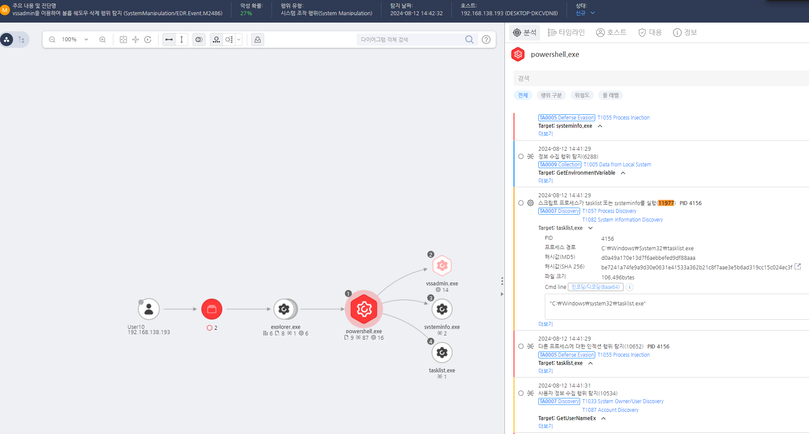

T1057.000.02 프로세스 검색
D3FEND
MITRE ATT&CK 액션을 기준으로 대응 방안을 작성
Detection
tasklist 커맨드를 탐지한다.
Detection(EDR)

Response
시스템에서 비정상적인 프로세스 탐색 활동을 모니터링하고 의심스러운 행동을 신속히 조사합니다.
Mitigations
WMI 권한 제한 및 모니터링 (M1026 - Privileged Account Management)
- WMI 명령을 실행할 수 있는 권한을 최소화하여 비관리자 계정의 사용을 제한
- WMI 쿼리 및 실행 권한을 관리자 계정으로만 제한
- WMI에 대한 읽기 및 쓰기 권한을 최소한의 사용자에게만 부여
- WMI 네임스페이스 및 객체에 대한 액세스 제어 설정을 강화
WMI 이벤트 모니터링 및 경고 (M1047 - System Logging & Monitoring)
- WMI 이벤트 및 쿼리의 실행을 모니터링하고, WMI를 통한 의심스러운 명령 실행을 추적
- Sysmon(Event ID 18)을 활용하여 WMI 이벤트 생성 및 실행 탐지
wmic.exe 및 powershell.exe 명령 실행에 대한 경고 및 로깅 활성화 - Windows 이벤트 로그를 통해 WMI 관련 이벤트(ID 5858, 5859, 5860 등)를 추적하고 분석
WMI 관련 도구 사용 제한 (M1038 - Execution Prevention)
wmic.exe, powershell.exe 등 WMI와 관련된 도구 사용을 제한하거나 화이트리스트 설정 - 비인가된 도구나 스크립트가 WMI를 통해 악성 명령을 실행하지 못하도록 권한 및 실행 제한
- AppLocker 또는 WDAC(Windows Defender Application Control)를 사용하여 승인된 도구만 실행 허용
WMI 관리 도구 및 서비스 보호 (M1043 - Code Signing)
- WMI 서비스(
winmgmt.exe)와 관련된 프로세스 및 도구에 대해 디지털 서명 및 인증 강화
- WMI 서비스의 시작 및 종료 이벤트를 로깅하고, 비정상적인 접근을 감지하여 차단
- WMI 프로바이더와 관련된 리소스에 대한 접근을 차단하여 불필요한 서비스 비활성화
PowerShell 및 스크립트 실행 제한 (M1038 - Execution Prevention)
- PowerShell 스크립트 실행 정책을 엄격히 설정하여 WMI를 통한 PowerShell 실행을 제한
- PowerShell Constrained Language Mode 활성화 및 스크립트 블록 로깅을 통해 악성 스크립트 탐지
- AppLocker 또는 WDAC를 활용하여 WMI 관련 스크립트가 의도하지 않은 명령을 실행하지 않도록 차단
EDR/XDR 솔루션을 통한 악성 WMI 탐지 (M1040 - Behavior-Based Detection)
- EDR/XDR 솔루션을 활용하여 WMI를 통한 악성 활동 탐지 및 차단
- WMI에서 비정상적인 스크립트 실행, 명령 생성 또는 서비스 변경 활동을 실시간으로 모니터링
- WMI 쿼리 및 실행의 비정상적인 패턴을 식별하여 경고 알림을 설정
Affected Techniques
Action 실행시 함꼐 영향을 받는 다른 Techniqes
| D3FEND |
| D3-PM Platform Monitoring |
| D3-PLA Process Lineage Analysis |
| D3-SCA System Call Analysis |